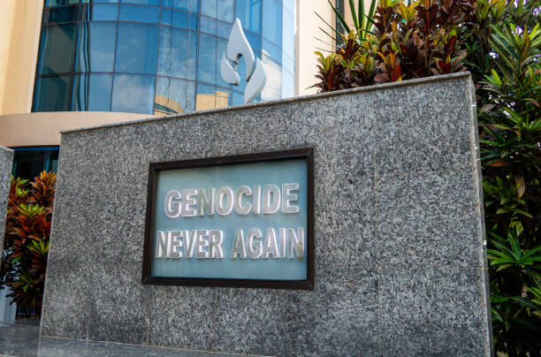
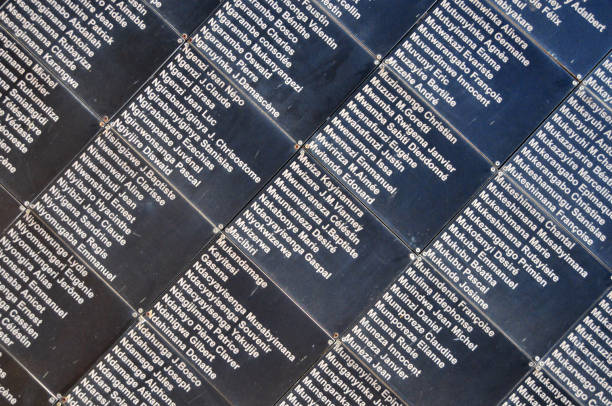
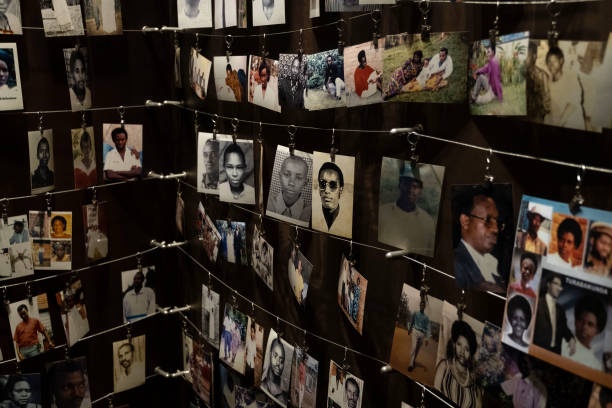
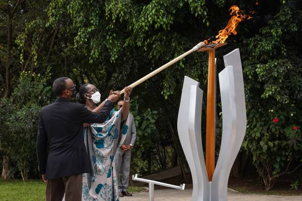
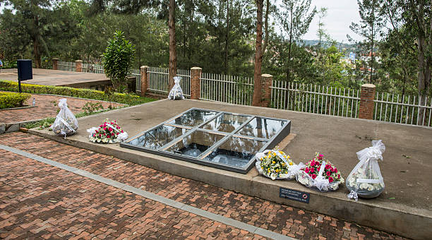

Kigali Genocide Memorial
A place of remembrance and education
About the Memorial
The Kigali Genocide Memorial is a powerful place dedicated to preserving the memory of the victims of the Rwandan Genocide of 1994. The memorial serves as a museum, a burial ground, and a center for research and education. It stands as a symbol of hope and reconciliation.
The memorial houses extensive exhibits that document the history before, during, and after the genocide. Visitors can learn about the causes of the conflict, the experiences of survivors, and the path toward reconciliation.
Visitor Information
| Information | Details |
|---|---|
| Opening Hours | Monday - Sunday: 8:00 AM - 5:30 PM |
| Entry Fee | Free admission for all visitors |
| Duration of Visit | 2-3 hours recommended |
| Guided Tours Available | Yes - Additional RWF 10,000 per guide |
| Photography | Photography prohibited inside museum |
Gallery

Memorial Gardens

Exhibition Area

Interior Museum

Memorial Walkway

Monument Area
Location & Directions
The Kigali Genocide Memorial is located in the Gisozi neighborhood of Kigali.
Visiting Tips
- Wear comfortable shoes for walking through the exhibits
- Allow 2-3 hours for a complete visit
- Consider hiring a guide for deeper insights
- The site can be emotionally intense - take breaks as needed
- Respect is essential - maintain appropriate behavior
- Visit early morning for a less crowded experience
Remembrance Through the Lens
Watch this video to learn more about the memorial and its significance:
Plan Your Visit
For more information and to book guided tours, visit their official website or contact them directly.
Learn More